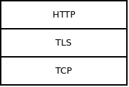

This article is going to argue that to get composable network protocols, we have to treat them in a way that seemingly breaks encapsulation. The stuff here is not intrinsically complicated but it may be counterintuitive. Give yourself some time to think about the examples before rejecting the entire idea.
First of all, let's look at the very idea of protocol composability. Imagine a stack of three protocols:

It seems that the implementation of TLS socket should own the TCP socket. In other words, that the TLS socket controls the lifetime of the TCP socket. In yet other words, that when you invoke "tls_connect" function it will also, transparently to the user, create an underlying TCP socket. Similarly, when you call "tls_close" function, it will also close the underlying TCP socket.
This provides nice encapsulation. The only thing the user sees is the HTTP socket and they have no direct access to the TLS and TCP sockets. HTTP socket, in turn, sees only TLS socket and has no access to the TCP socket. Only TLS socket can access the TCP socket.
Unfortunately, this design also limits composability: Each protocol can run only on top of a single hard-wired underlying protocol. There's no way to make HTTP run both on top of raw TCP (simple HTTP stack) and on top of TLS (HTTPS stack).
To address that use case we can decouple the protocols by giving them a generic interface. Virtual "send" function to send data. Virtual "recv" function to receive data. These functions, being virtual, will work with any protocol. Once implemented the protocols can communicate via these virtual functions. They don't need to know about each other and they can be layered easily.
All you need to do is to stack the protocols one on the top of the other:
s = tcp_connect(addr);
s = tls_attach(s);
s = http_attach(s);
And here's what I'm getting at: Who executes the three lines above?
It's none of the protocols. Those are fully agnostic about protocols above or below them.
You can say it's the "user". However, that's confusing. HTTP protocol can be though of as a user of TLS protocol. TLS is a user of TCP protocol. But none of these "users" runs the three lines of the example.
Let's rather say it's "application". It's the application that sticks the three protocols together, uses the stack and then dismantles it after the work is done. You can also think of it as of some kind of orchestrator, an entity that knows how all the small protocols are meant to be layered, how they are initialized and terminated, how they follow each other. An entity that sees the protocol stack in its entirety, ignoring the encapsulation concerns.
Just keep in mind that "application" doesn't necessarily need to be an actual application. It can also be a library or even some kind of big network protocol composed of many microprotocols. Still, thinking of this role as of "application" makes the distinction between the two different roles ("protocol", "application") less confusing.
Let's now consider a simple heartbeat protocol. It will do nothing but send heartbeat to the peer each N milliseconds. It will also check whether the heartbeats are arriving in time and if not so, it will pass error to the user. To work properly, both peers have to use the same value of N. Yet, we cannot hard-code the value in the implementation of the heartbeat protocol. We want users to be able to chose their heartbeat interval depending on the nature of the application. It needs to be parametrizable.
What we can do is to let application pass the value of N to the socket when it is creating it.
s = heartbeat_attach(s, 1000); /* Sends heartbeats every 1000 milliseconds. */
All right, you ask, but how we guarantee that that peer will use N=1000 as well? Surely we need some parameter negotiation between the peers?
And now, I find this counterintuitive: No, there needs to be no such parameter negotiation.
It all depends on your perspective. If you are thinking only in the terms of the heartbeat protocol, there's no way out. There's no way to guess what value of N will be used by the peer and so some kind of negotiation is needed. However, if you look at it from the point of view of the application it's easy. You know that you are connecting to the same application and thus you know that it will send heartbeats every second. Problem solved. No negotiation needed.
From a broader perspective, application is an entity that's different from any of the microprotocols involved. It can make assumptions that none of the microprotocols can. For example, it can assume that heartbeats will be sent every second. It can also possess data that none of the microprotocols has. Let me illustrate it using the following example.
One of the common problems of network protocol design is eliminating roundtrips. If there are 10 protocols in the stack, if each of them needs an initial roundtrip and if roundtrip time is 100 milliseconds establishment of a connection will take one second. That's often not acceptable. Even worse, the latency cannot be improved because speed of light, Einstein etc. Protocol designers will therefore throw good design principles under the bus and engage in all kinds of protocol conflation and protocol mislayering.
Let us consider a stack of five protocols, each needing some parameters. Moreover, let's say we cannot use trick above where the application knows all the parameter values in advance and can hard-code them. Is there a way to cut down the number of initial parameter negotiations (i.e. network roundtrips) while still keeping the protocols separate and not merging them into one ugly monolith?
Well, the application can run some generic parameter-negotiating protocol. HTTP, for example. It will send all the parameters for all five protocols to the peer inside the HTTP request and it will receive peer's values of those parameters in the HTTP reply. Single round trip, yet all the parameters for all the layers of the stack are negotiated. Once done, the application can then create all five layers of the stack.
s = tcp_connect(addr);
s = http_attach(s);
...
/* Do the parameter negotiation here. */
...
s = http_detach(s);
s = protocol1_attach(s, param_A);
s = protocol2_attach(s, param_B, param_C);
s = protocol3_attach(s, param_D);
s = protocol4_attach(s, param_E);
s = protocol5_attach(s, param_F, param_G, param_H);
...
If you think about it, it seems that the initialization of the protocol is not really a natural part of that protocol. In the case above it's not even clear which protocol the initial handshake should belong to. They all share that single handshake as equals.
If we accept that the initialization does not belong to a protocol, then what about the termination?
People typically don't give protocol termination much thought: "Just shut the entire stack down and be done with it." However, once composable microprotocols enter the picture everything changes. In fact, clean protocol termination is a necessary prerequisite for horizontal composition of protocols (one protocol finishing and another one starting on the top of the same underlying transport).
Consider, for example, how WebSocket protocol follows HTTP protocol. If HTTP haven't terminated cleanly (by each party sending an empty line) the peers would not agree on where in the stream of bytes they are and it would not be possible to start the WebSocket protocol.
So back to the original question: Is termination a natural part of a protocol?
Imagine a CRLF protocol (one that breaks stream of bytes into messages separated by newlines) runing on top of TCP. Application may require three messages (lines) to be passed via this protocol. Afterwards, it will dismantle it and continue with something else, say TLS.
In this case CRLF protocol needs no special termination mechanism. It is simply dismantled after three messages are sent.
s = tcp_connect(addr);
s = crlf_attach(s);
send(s, "ABC", 3);
send(s, "DEF", 3);
send(s, "GHI", 3);
s = crlf_detach(s);
And the same argument that we've seen before applies. The peer doesn't have to be informed that three messages will be passed. The application assumes the other side is the same application and thus it already knows that three messages will be passed.
"But, but!" you complain: "That's not safe! What if we send just two messages then close the CRLF protocol? What if we send four messages?"
And the answer, quite obviously in retrospect, is that it's just a matter of life. Application expects the peer to behave and send three messages but in real world peers may misbehave. They may be broken or malicious. There may be a bug in the implementation. In any case, the local network stack should be resilient to such breaches of the protocol and terminate the connection as soon as it realizes that something weird is going on.
I don't know whether I've convinced you that protocol initialization and termination is naturally separate from the rest of the protocol. For me, it makes sense because the alternative is… well, I don't know. I guess there's no alternative. If there's no external entity that oversees layering and sequence of microprotocols there's no way to split the megaprotocols of today into smaller pieces in the first place. If that entity doesn't have full control of initialization and termination of those microprotocols we'll end up with network roundtrips being done on each layer. The only alternative, really, is the monolithic, non-composable network stack of today.
March 29nd, 2018